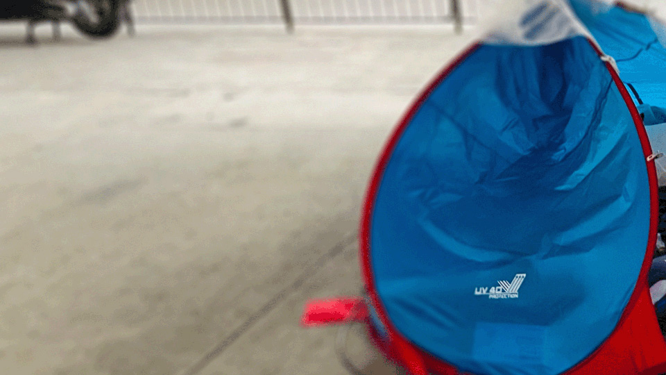
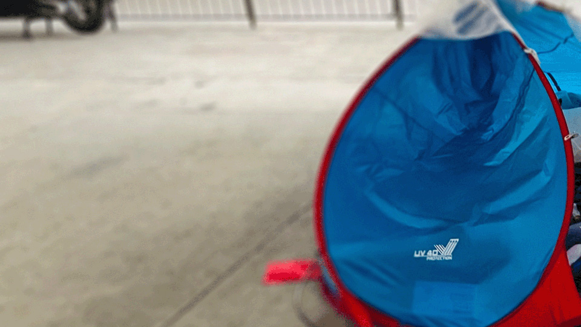
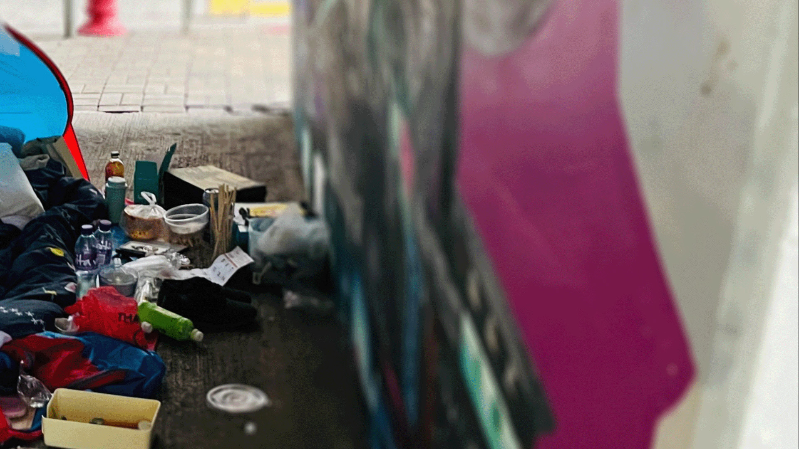

Homeless
Addressing the issue of homeless in Hong Kong
Addressing the issue of Homeless and Hunger in Hong Kong, we hope to tackle the issue as it is a main problem in Hong Kong.
Homeless
Addressing the issue of homeless in Hong Kong
Hunger
Addressing the issue of hunger in Hong Kong